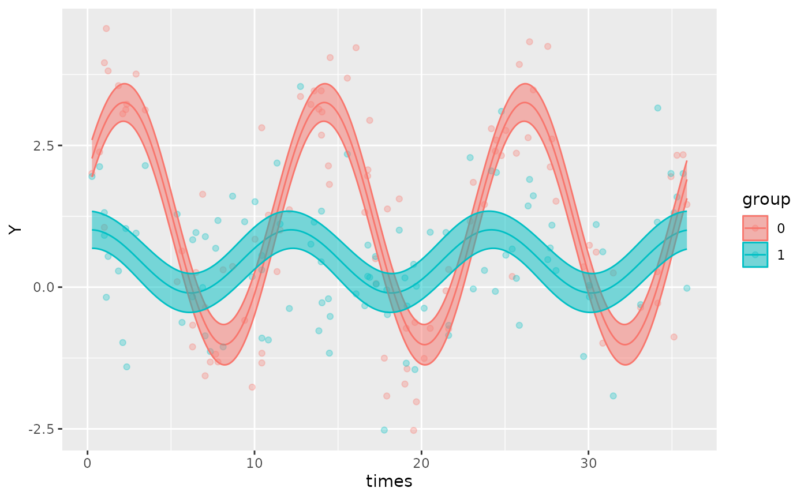
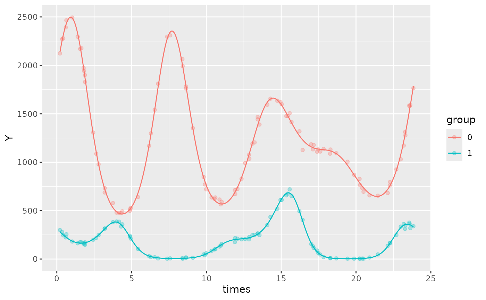
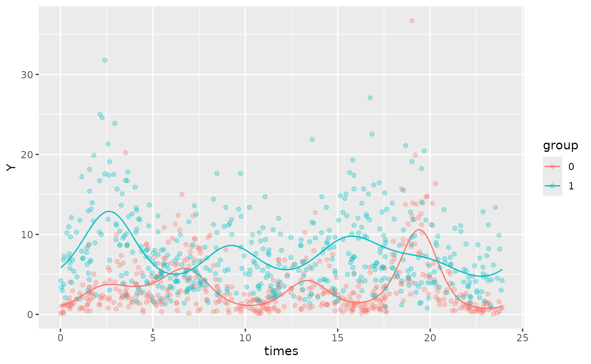

Simulating data
Oliver Jayasinghe and Rex Parsons
Source:vignettes/data-simulations.Rmd
data-simulations.RmdSimulating rhythmic data
simulate_cosinor allows users to simulate circadian data
from Gaussian, Gamma, Binomial, or Poisson distributions. It also
supports generation of multi-component data, as well as simulation of
grouped data with two levels.
Understanding the inputs for a simple model
n specifies the number of datapoints.
mesor, amp, and acro represent
the parameters that will be used to simulate the dataset. Note that
acro should be expressed in units of radians.
period determines the period of the dataset
n_components corresponds to the number of components in
the simulated dataset. Details about how to specify a multi-component
model are included later in this vignette
The family argument determines the distribution that the
data is simulated from. Currently, simulate_cosinor
supports simulations from Gaussian, Gamma, Binomial, and Poisson
distributions:
family = 'gaussian'family = 'gamma'family = 'binomial'family = 'poisson'
Note that the … parameter controls extra arguments such
as standard deviation, and the shape parameter for a Gamma
distribution:
sdcontrols the standard deviation when sampling from a normal distribution.sdis set to 1 by defaultalphacontrols the shape parameter for the Gamma distribution.alphais set to 1 by default
n_period is the number of periods that are simulated. By
default, the maximum period supplied defines the upper limit of the time
vector used in the simulation. Thus, increasing n_period
increases the number of cycles that are simulated.
Consider the following example of a single-component Poisson data-set with no grouping variable:
testdata <- simulate_cosinor(
n = 200,
mesor = 1,
amp = 2,
acro = 1.2,
period = 12,
n_period = 3,
family = "poisson"
)
testdataNow, let’s fit a cglmm() model to this simulated dataset
to see how it matches with our original parameters:
Simulating grouped cosinor data
The simulate_cosinor() function can simulate grouped
data from two levels with their own parameters when
beta.group = TRUE. The reference group is specified by the
parameters mesor, amp, acro. The
treatment group is specified in the same manner, but with the
beta prefix. For example:
beta.mesorbeta.ampbeta.acro
Similarly, the standard deviation (sd) for the Gaussian
distribution or the alpha parameter for the Gamma
distribution are specified as:
beta.sd(1 by default)beta.alpha(1 by default)
simulate_cosinor(
n = 100,
mesor = 1,
amp = 2,
acro = 1.2,
period = 12,
beta.group = TRUE,
beta.mesor = 0.4,
beta.amp = 0.5,
beta.acro = 0.2,
n_period = 3,
n_components = 1,
family = "poisson"
)#>
#> Conditional Model
#> Raw model coefficients:
#> estimate standard.error lower.CI upper.CI p.value
#> (Intercept) 1.12116490 0.10184899 0.92154455 1.32079 < 2.22e-16 ***
#> group1 -0.66674408 0.14403622 -0.94904988 -0.38444 3.6743e-06 ***
#> group0:main_rrr1 0.88802706 0.13903539 0.61552272 1.16053 1.6911e-10 ***
#> group1:main_rrr1 0.55450750 0.13903539 0.28200316 0.82701 6.6563e-05 ***
#> group0:main_sss1 1.94285441 0.15189401 1.64514763 2.24056 < 2.22e-16 ***
#> group1:main_sss1 0.05251341 0.15189401 -0.24519337 0.35022 0.72955
#> ---
#> Signif. codes: 0 '***' 0.001 '**' 0.01 '*' 0.05 '.' 0.1 ' ' 1
#>
#> Transformed coefficients:
#> estimate standard.error lower.CI upper.CI p.value
#> (Intercept) 1.12116490 0.10184899 0.92154455 1.32079 < 2.22e-16 ***
#> [group=1] -0.66674408 0.14403622 -0.94904988 -0.38444 3.6743e-06 ***
#> [group=0]:amp1 2.13618242 0.14272487 1.85644681 2.41592 < 2.22e-16 ***
#> [group=1]:amp1 0.55698854 0.13730969 0.28786649 0.82611 4.9826e-05 ***
#> [group=0]:acr1 1.14207576 0.06948499 1.00588769 1.27826 < 2.22e-16 ***
#> [group=1]:acr1 0.09442120 0.27550976 -0.44556801 0.63441 0.73181
#> ---
#> Signif. codes: 0 '***' 0.001 '**' 0.01 '*' 0.05 '.' 0.1 ' ' 1
Simulating multi-component cosinor data
To simulate multi-component data with the number of components
corresponding to n_components , specify a vector of values
for the parameter inputs, amp, acro, and
period. Since only one mesor is provided for a
multi-component cosinor curve, the mesor argument in
simualte_cosinor will only accept single-element inputs.
For example:
testdata <- simulate_cosinor(
n = 200,
mesor = 1,
amp = c(0.2, 1),
acro = c(1.2, 2),
period = c(12, 6),
n_components = 2,
n_period = 2,
family = "poisson"
)
testdata
object <- cglmm(
Y ~ amp_acro(times,
n_components = 2,
period = c(12, 6)
),
data = testdata,
family = poisson()
)
summary(object)
autoplot(object, superimpose.data = TRUE)In this example:
mesor = 1suggests that the intercept of the overall cosinor curve (accounting for all components) is 1amp=c(0.2,1)indicates that the amplitude of the first component is 0.2, and the second is 1acro = c(1.2, 2)indicates that the acrophase of the first component is 1.2 radians, and the second is 2 radiansperiod = c(12, 6)indicates that the period of the first component is 12 units, and the second is 6 units.n_components = 2, because we are specifying a two-component dataset
To simulate a dataset with more than two components, specify more
elements in the vector inputs for these parameters. Ensure that the
number of inputs for each parameter corresponds to the number of
components specified in n_components. For example, if
n_components = 3, then amp, acro,
period must all have 3 elements corresponding to each of
the three components.
The following are examples of a multi-component cosinor dataset with multiple groups. The first one is from a Poisson distribution, and the second is from a Gamma distribution
testdata <- simulate_cosinor(100,
mesor = 7,
amp = c(0.1, 0.4, 0.5),
acro = c(1, 1.5, 0.1),
beta.mesor = 4.4,
beta.amp = c(2, 1, 0.4),
beta.acro = c(1, -1.5, -1),
family = "poisson",
period = c(12, 6, 8),
n_period = 2,
n_components = 3
)
object <- cglmm(Y ~ group + amp_acro(times,
n_components = 3,
period = c(12, 6, 8),
group = "group"
), data = testdata, family = poisson())
summary(object)
#>
#> Conditional Model
#> Raw model coefficients:
#> estimate standard.error lower.CI upper.CI p.value
#> (Intercept) 6.998354005 0.003253938 6.991976404 7.00473 < 2.22e-16
#> group1 -2.592232609 0.018835942 -2.629150377 -2.55531 < 2.22e-16
#> group0:main_rrr1 0.044557196 0.004155847 0.036411886 0.05270 < 2.22e-16
#> group1:main_rrr1 1.074642116 0.020749438 1.033973966 1.11531 < 2.22e-16
#> group0:main_sss1 0.083480030 0.004337486 0.074978714 0.09198 < 2.22e-16
#> group1:main_sss1 1.669438105 0.024612013 1.621199446 1.71768 < 2.22e-16
#> group0:main_rrr2 0.030533798 0.004128972 0.022441162 0.03863 1.414e-13
#> group1:main_rrr2 0.047809864 0.013803489 0.020755522 0.07486 0.00053298
#> group0:main_sss2 0.397891462 0.004252676 0.389556370 0.40623 < 2.22e-16
#> group1:main_sss2 -1.000818250 0.017290648 -1.034707296 -0.96693 < 2.22e-16
#> group0:main_rrr3 0.499430452 0.004328507 0.490946734 0.50791 < 2.22e-16
#> group1:main_rrr3 0.212646480 0.009497746 0.194031240 0.23126 < 2.22e-16
#> group0:main_sss3 0.042194110 0.004072380 0.034212393 0.05018 < 2.22e-16
#> group1:main_sss3 -0.344588877 0.011411108 -0.366954238 -0.32222 < 2.22e-16
#>
#> (Intercept) ***
#> group1 ***
#> group0:main_rrr1 ***
#> group1:main_rrr1 ***
#> group0:main_sss1 ***
#> group1:main_sss1 ***
#> group0:main_rrr2 ***
#> group1:main_rrr2 ***
#> group0:main_sss2 ***
#> group1:main_sss2 ***
#> group0:main_rrr3 ***
#> group1:main_rrr3 ***
#> group0:main_sss3 ***
#> group1:main_sss3 ***
#> ---
#> Signif. codes: 0 '***' 0.001 '**' 0.01 '*' 0.05 '.' 0.1 ' ' 1
#>
#> Transformed coefficients:
#> estimate standard.error lower.CI upper.CI p.value
#> (Intercept) 6.998354005 0.003253938 6.991976404 7.00473 < 2.22e-16 ***
#> [group=1] -2.592232609 0.018835942 -2.629150377 -2.55531 < 2.22e-16 ***
#> [group=0]:amp1 0.094626947 0.004055983 0.086677366 0.10258 < 2.22e-16 ***
#> [group=1]:amp1 1.985416648 0.029473535 1.927649582 2.04318 < 2.22e-16 ***
#> [group=0]:amp2 0.399061309 0.004276099 0.390680310 0.40744 < 2.22e-16 ***
#> [group=1]:amp2 1.001959556 0.017384846 0.967885885 1.03603 < 2.22e-16 ***
#> [group=0]:amp3 0.501209656 0.004311730 0.492758820 0.50966 < 2.22e-16 ***
#> [group=1]:amp3 0.404919769 0.010630637 0.384084104 0.42576 < 2.22e-16 ***
#> [group=0]:acr1 1.080517178 0.046826088 0.988739731 1.17229 < 2.22e-16 ***
#> [group=1]:acr1 0.998852179 0.006520588 0.986072061 1.01163 < 2.22e-16 ***
#> [group=0]:acr2 1.494207419 0.010285914 1.474047398 1.51437 < 2.22e-16 ***
#> [group=1]:acr2 -1.523061840 0.013657898 -1.549830827 -1.49629 < 2.22e-16 ***
#> [group=0]:acr3 0.084284306 0.008160534 0.068289953 0.10028 < 2.22e-16 ***
#> [group=1]:acr3 -1.017896654 0.025594912 -1.068061759 -0.96773 < 2.22e-16 ***
#> ---
#> Signif. codes: 0 '***' 0.001 '**' 0.01 '*' 0.05 '.' 0.1 ' ' 1
autoplot(object,
superimpose.data = TRUE,
x_str = "group",
predict.ribbon = FALSE
)
testdata <- simulate_cosinor(500,
mesor = 1,
amp = c(0.5, 0.5, 0.5),
acro = c(pi, pi / 2, pi),
alpha = 2,
beta.mesor = 2,
beta.amp = c(0.2, 0.2, 0.2),
beta.acro = c(pi / 2, pi, pi / 2),
beta.alpha = 3,
family = "gamma",
period = c(12, 6, 8),
n_period = 2,
n_components = 3
)
object <- cglmm(Y ~ group + amp_acro(times,
n_components = 3,
period = c(12, 6, 8),
group = "group"
), data = testdata, family = Gamma(link = "log"))
summary(object)
#>
#> Conditional Model
#> Raw model coefficients:
#> estimate standard.error lower.CI upper.CI p.value
#> (Intercept) 1.01896530 0.02848404 0.96313761 1.07479 < 2.22e-16 ***
#> group1 0.96690011 0.04027263 0.88796720 1.04583 < 2.22e-16 ***
#> group0:main_rrr1 -0.56669761 0.03946522 -0.64404802 -0.48935 < 2.22e-16 ***
#> group1:main_rrr1 -0.05275334 0.03942696 -0.13002877 0.02452 0.18090
#> group0:main_sss1 0.04566844 0.04141021 -0.03549407 0.12683 0.27010
#> group1:main_sss1 0.20364525 0.04112574 0.12304027 0.28425 7.3541e-07 ***
#> group0:main_rrr2 0.02476630 0.04124489 -0.05607220 0.10560 0.54819
#> group1:main_rrr2 -0.18934039 0.04135922 -0.27040296 -0.10828 4.6956e-06 ***
#> group0:main_sss2 0.58726498 0.03941810 0.51000693 0.66452 < 2.22e-16 ***
#> group1:main_sss2 0.02627528 0.03897592 -0.05011611 0.10267 0.50022
#> group0:main_rrr3 -0.42914234 0.03954651 -0.50665208 -0.35163 < 2.22e-16 ***
#> group1:main_rrr3 0.01590103 0.03977800 -0.06206241 0.09386 0.68934
#> group0:main_sss3 -0.03853448 0.04072274 -0.11834959 0.04128 0.34401
#> group1:main_sss3 0.23069385 0.04006178 0.15217421 0.30921 8.4888e-09 ***
#> ---
#> Signif. codes: 0 '***' 0.001 '**' 0.01 '*' 0.05 '.' 0.1 ' ' 1
#>
#> Transformed coefficients:
#> estimate standard.error lower.CI upper.CI p.value
#> (Intercept) 1.01896530 0.02848404 0.96313761 1.07479 < 2.22e-16 ***
#> [group=1] 0.96690011 0.04027263 0.88796720 1.04583 < 2.22e-16 ***
#> [group=0]:amp1 0.56853477 0.03936314 0.49138444 0.64569 < 2.22e-16 ***
#> [group=1]:amp1 0.21036706 0.04069777 0.13060089 0.29013 2.3534e-07 ***
#> [group=0]:amp2 0.58778698 0.03943642 0.51049301 0.66508 < 2.22e-16 ***
#> [group=1]:amp2 0.19115484 0.04115101 0.11050033 0.27181 3.3974e-06 ***
#> [group=0]:amp3 0.43086895 0.03978630 0.35288925 0.50885 < 2.22e-16 ***
#> [group=1]:amp3 0.23124120 0.04013566 0.15257676 0.30991 8.3375e-09 ***
#> [group=0]:acr1 3.06117946 0.07300742 2.91808755 3.20427 < 2.22e-16 ***
#> [group=1]:acr1 1.82426992 0.18951910 1.45281930 2.19572 < 2.22e-16 ***
#> [group=0]:acr2 1.52864903 0.07013999 1.39117718 1.66612 < 2.22e-16 ***
#> [group=1]:acr2 3.00370061 0.20504673 2.60181641 3.40558 < 2.22e-16 ***
#> [group=0]:acr3 -3.05203866 0.09396942 -3.23621534 -2.86786 < 2.22e-16 ***
#> [group=1]:acr3 1.50197819 0.17169713 1.16545800 1.83850 < 2.22e-16 ***
#> ---
#> Signif. codes: 0 '***' 0.001 '**' 0.01 '*' 0.05 '.' 0.1 ' ' 1
autoplot(object,
superimpose.data = TRUE,
x_str = "group",
predict.ribbon = FALSE
)